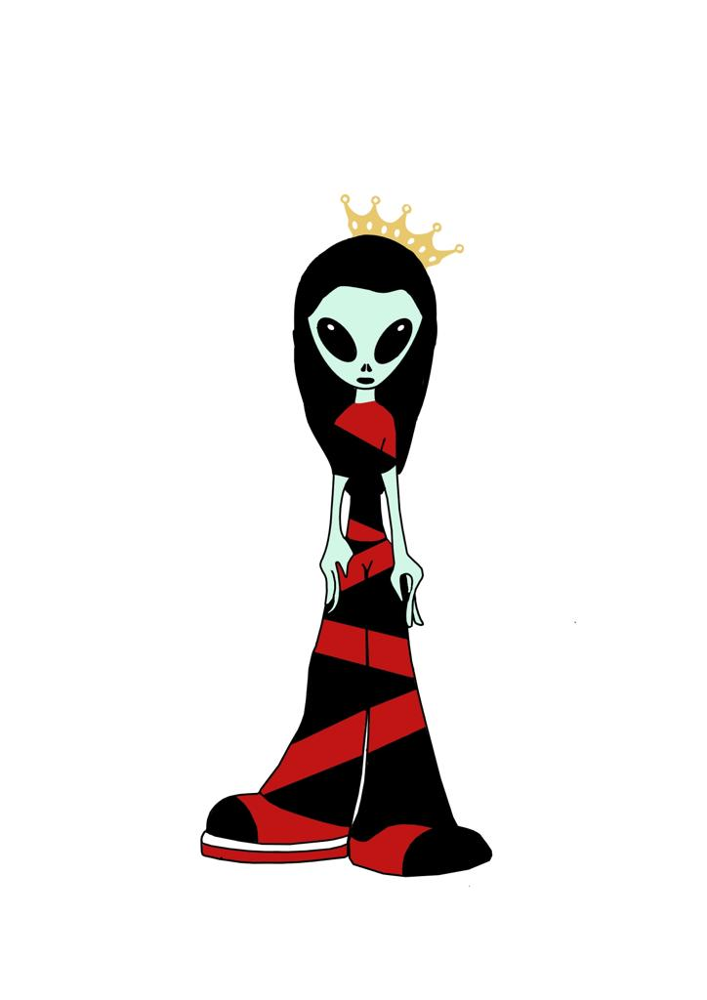
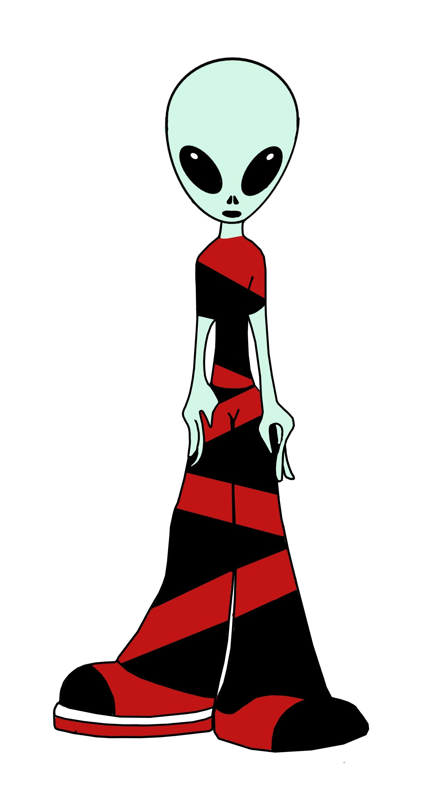
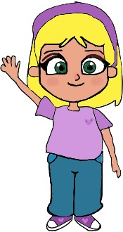
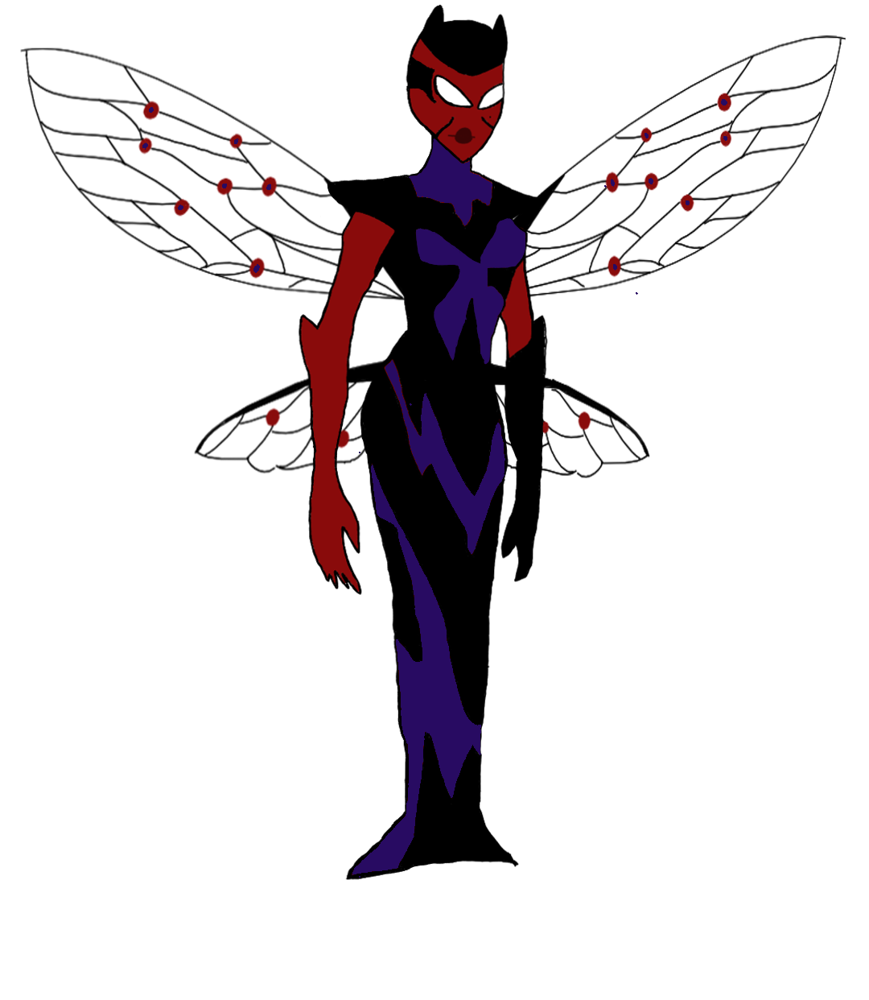

Personajes
°Reina Issha

Estatura media y su color caracteristicos es el rosa.
Reina de la tripulacion oschu curiosa y desafiante,
°Irguino

Estatura media y lo caracteriza el color azul.
Es conocido como el ladron mas silencionso para su tripulacion y es la mano derecha de la reina
°Saraouh

Estatura un poco alta y de piel blanca.
Es un ser humano que su mision sera ayudar a su cultura
°Iriana

Estatura un poco alta y de piel morena.
Es un ser humano, su mision sera ayudar a su cultura junto con su amiga Saraouh.
°Los Hemerlant

Seres interdimensionales de color rojo con negro y su estatura es alta.
Es la mayor amenzada tanto para los oschu como para los seres humanos.
°Ser de Luz

Ser de luz
Es el guia de saraouh e iriana que las llevara con la tripulacion oschu.